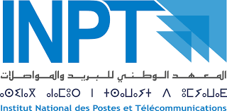
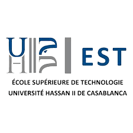

Ma Formation
Un parcours orienté vers le développement et l'intelligence artificielle
Master 1 — Data & Intelligence Artificielle
INPT — Institut National des Postes et Télécommunications
Rabat, Maroc
Master en alternance avec le Groupe Almada, axé sur la science des données et l'intelligence artificielle. Formation combinant théorie avancée à l'INPT et expérience professionnelle en entreprise chez Almada.

Licence Professionnelle — Développement d'Applications & Intelligence Artificielle
EST — École Supérieure de Technologie
Casablanca, Maroc
Formation spécialisée en développement d'applications modernes et intelligence artificielle, couvrant le développement web full-stack, le machine learning et le déploiement de modèles IA.

DUT — Génie Informatique
EST — École Supérieure de Technologie
Casablanca, Maroc
Diplôme Universitaire de Technologie en Génie Informatique. Formation de base solide couvrant les fondamentaux de l'informatique, la programmation, les bases de données, les réseaux et les systèmes d'exploitation.